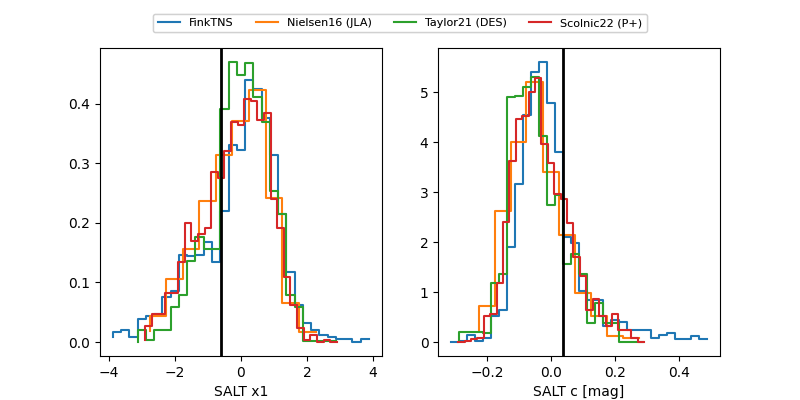

FINK: ZTF25abpqkox
Lasair: ZTF25abpqkox
ALeRCE: ZTF25abpqkox
TNS: 2025xdj
YSE: 2025xdj
ZTF25abpqkox (ztf,fink)
2025xdj (tns,yse)
equatorial (ra, dec) = (327.0382,-7.36313)
galactic (l, b) = (48.7193,-42.34206)

last atlasc=18.66, atlaso=19.23, ztfg=19.45, ztfr=19.25
1 atlasc, 5 atlaso, 18 ztfg, 18 ztfr detections